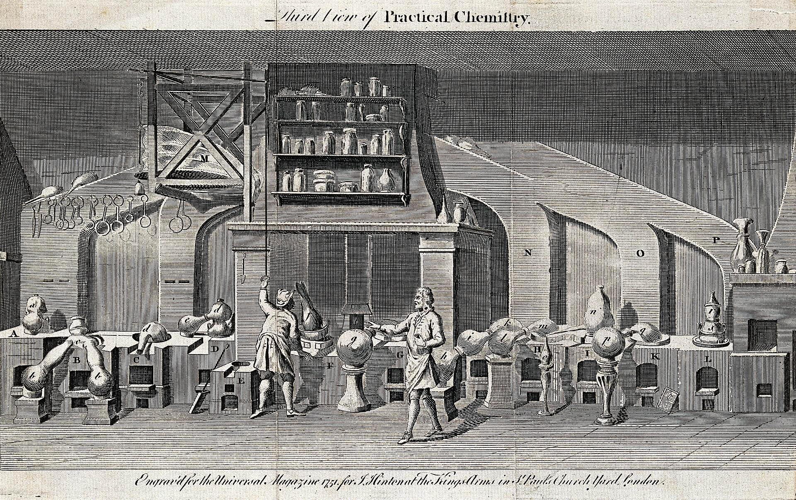
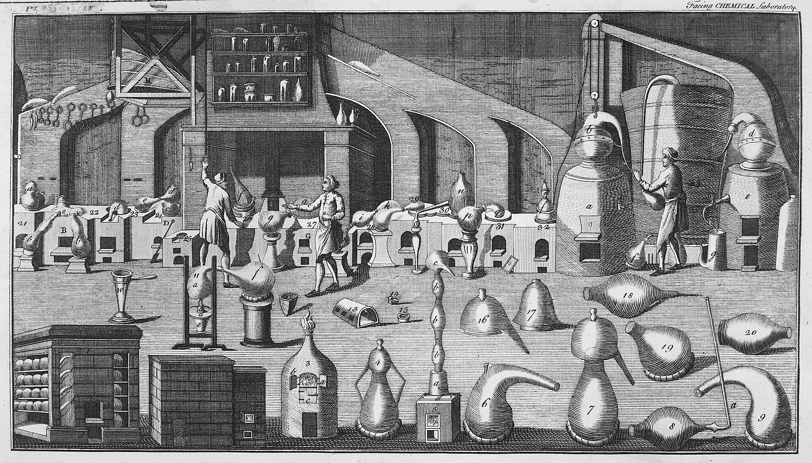

Chemistry
CCVX entrance exam · Thursday 26 November 2026 · Utrecht, 13:30–16:30 · register by Thursday 12 November 2026
BINAS is allowed in the chemistry exam.
Launch offer: EUR 79 per subject for the first month after launch.
53 subdomains of notes
8 practice questions with solutions
2 full three-hour mock exams
1 past-exam walkthrough

Free sample: C2 – Chemical Calculations
This complete subdomain is free, no account needed: its full notes and all its practice questions with worked solutions. It is exactly what the course looks like.

Loading the sample…
The syllabus map
Every domain and subdomain of the CCVX Chemistry syllabus. The free sample subdomain is marked.
0 · Basic knowledge
A · Skills
- A1 – Using Information Skills
- A2 – Communication
- A3 – Reflecting on Learning
- A4 – Studies and Professions
- A5 – Research
- A6 – Design
- A7 – Modelling
- A8 – Scientific Instruments
- A9 – Evaluation and Judgment
- A10 – Using Chemical Concepts
- A11 – Reasoning in terms of Context and Concepts
- A12 – Reasoning in terms of Structure and Properties
- A13 – Reasoning about Systems, Change and Energy
- A14 – Reasoning in terms of Sustainability
- A15 – Reasoning about the Development of Chemical Knowledge
B · Substances and materials
C · Chemical processes and conservation laws
D · Development of chemical knowledge
E · Innovation and chemical research
F · Industrial chemical processes
G · Society chemistry and technology
Get Chemistry
€ 79 per subject, once · VAT included · 12 months access · launch price
Bundles: any 2 subjects € 139 · any 3 € 189 · all 5 € 279.
Buy Chemistry
Official resources
- Past and sample exams: Chemistry, every official free exam, with the tip to time yourself for 180 minutes
- CCVX: dates, registration and sample exams (www.ccvx.nl)
- The CCVX's own preparation advice